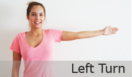
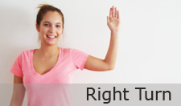

Learn Bike Safety

Maintain control of bicycle
- Select a properly fitted helmet with the help of your local bike shop
- Never drive under the influence of drugs or alcohol
- Wear a helmet
- Make sure your helmet is properly fitted and wear it as instructed
- Always be prepared to stop or take evasive action
- Always use hand signals when making a turn
- Use lights and reflectors when biking at night
- Ride the same direction as traffic
- Keep your eyes on the road
- Obey traffic signals
